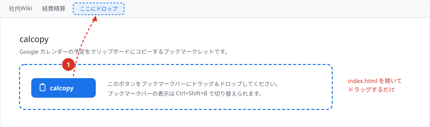
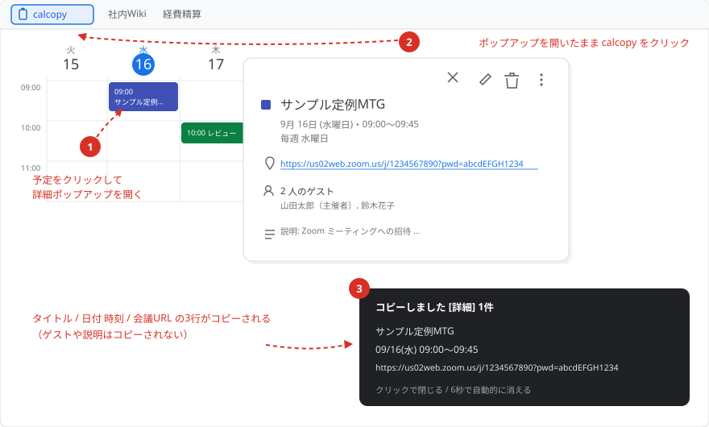
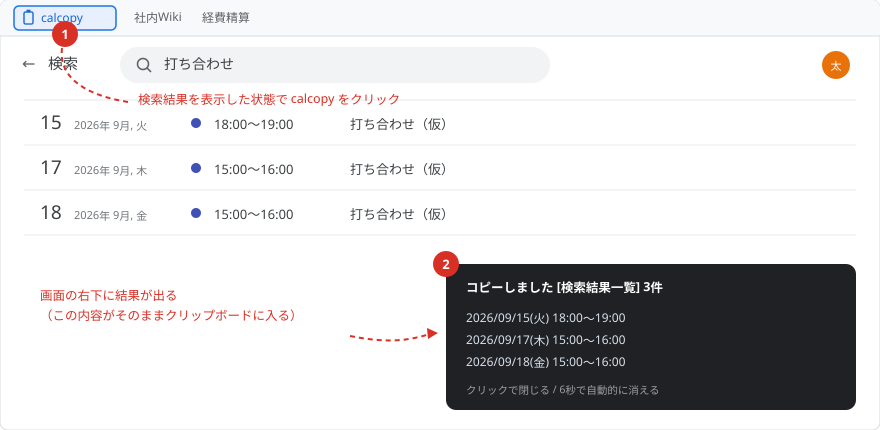

calcopy
Google カレンダーの予定をクリップボードにコピーするブックマークレットです。
予定の詳細と検索結果一覧で、動作が自動で切り替わります。
1. インストール
📋 calcopy
このボタンをブックマークバーにドラッグ＆ドロップしてください（6,745 bytes）。
ブックマークバーの表示は
ブックマークバーの表示は
Ctrl+Shift+B で切り替えられます。

2. 使い方
Google カレンダーを開いた状態で、ブックマークバーの calcopy をクリックします。 コピー結果は画面の右下にトーストで表示されます（クリックで閉じる / 6 秒で自動的に消える）。
| 実行する場所 | コピーされるもの |
|---|---|
| 予定の詳細 予定をクリックして出るポップアップ （日 / 週 / 月ビューでも検索結果でも可） |
その予定 1 件（改行つなぎ） タイトル / 日付 + 時刻 / 会議 URL |
| 検索結果一覧 カレンダー上部の検索窓から検索した画面 |
一覧のすべての予定 日付 + 時刻（スペースつなぎ） |
2-1. 予定 1 件をコピーする（詳細ポップアップ）

- コピーしたい予定をクリックして、詳細ポップアップを開く
- ポップアップを開いたまま calcopy をクリック
- 次の 3 行がクリップボードに入る
サンプル定例MTG 09/16(水) 09:00～09:45 https://us02web.zoom.us/j/1234567890?pwd=…
- 日 / 週 / 月ビューでも、検索結果一覧からでも、ポップアップを開けば同じように使えます。
- 3 行目は Google Meet / Zoom / Teams の URL があるときだけ付きます。 場所欄のリンク → Meet の参加ボタン → 説明欄の本文、の順に探します。 会議 URL が無い予定（物理的な会議室だけ、場所なし）では 2 行になります。
- ゲストや説明はコピーされません。
- 詳細ポップアップには年が表示されないため、日付は「月/日(曜)」です。
別の年の予定など、画面に年が出ている場合だけ
2027/03/16(火)の形式になります。
2-2. 検索結果をまとめてコピーする

- カレンダー上部の検索窓で検索し、結果一覧を表示する
- calcopy をクリック
- 一覧のすべての予定が、1 行 1 件でクリップボードに入る
2026/09/15(火) 18:00～19:00 2026/09/17(木) 15:00～16:00 2026/09/18(金) 15:00～16:00
日付と時刻をスペースでつなぎます。タイトルは付きません。
2-3. コピーされない場合
- 詳細ポップアップを開いていない日 / 週 / 月ビューでは何もコピーせず、 「Google カレンダーの検索結果、または予定の詳細を開いた状態で実行してください。」と表示します。
- 詳細ポップアップが開いているときは、どの画面でもつねに「詳細」モードが優先されます。 検索結果をまとめてコピーしたいときは、ポップアップを閉じてから実行してください。
3. 動作ログ
ソースコード・使い方の詳細: github.com/yugo-yamamoto/calcopy